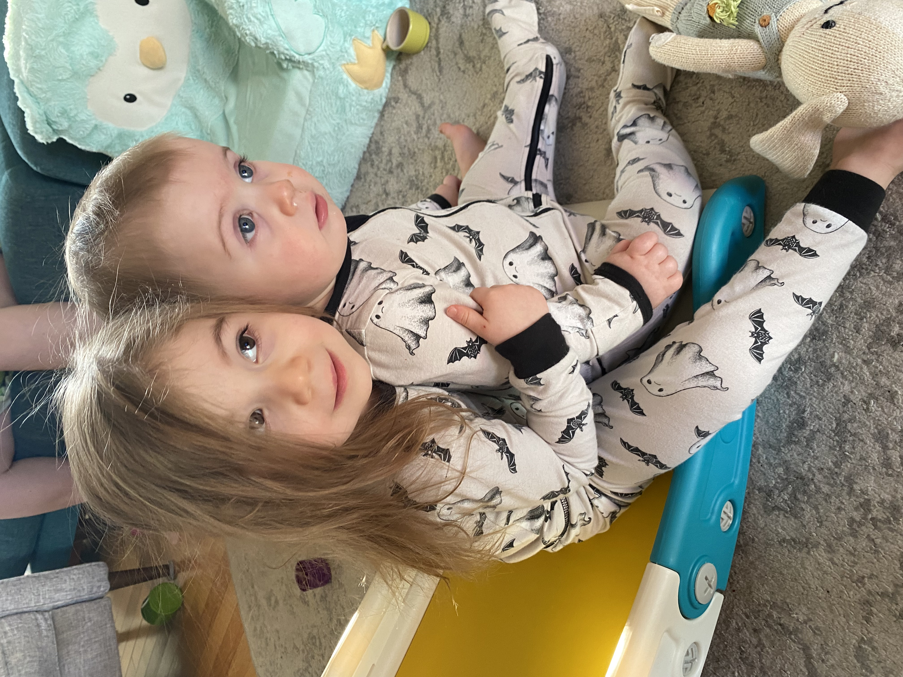

Here I used jquery's animate function to move this card from offscreen to the center of the screen. I had to calculate the center position, which I did by subtracting the width of the window, and then subtracting the width of the card divided by 2 (So half the width of the card).
Quinn is a 3 year old who is too smart for her own good. Mercer is the biggest 17 month old in the WORLD!
